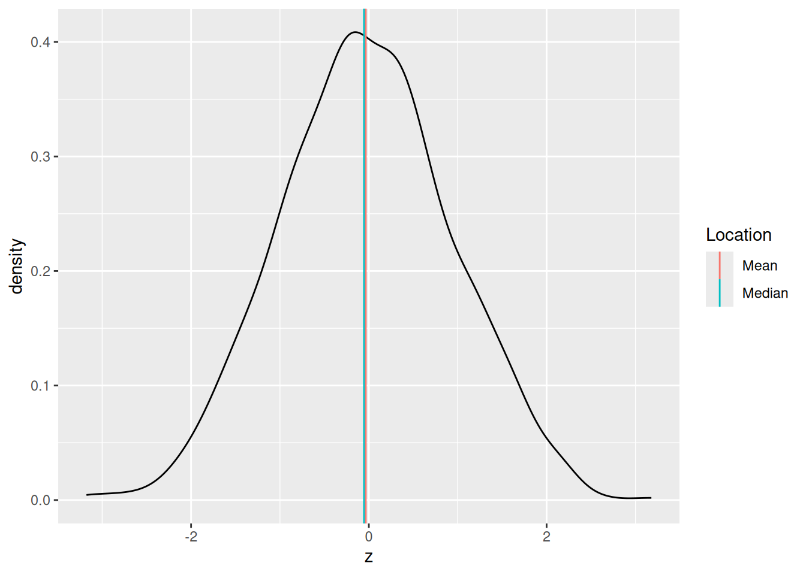
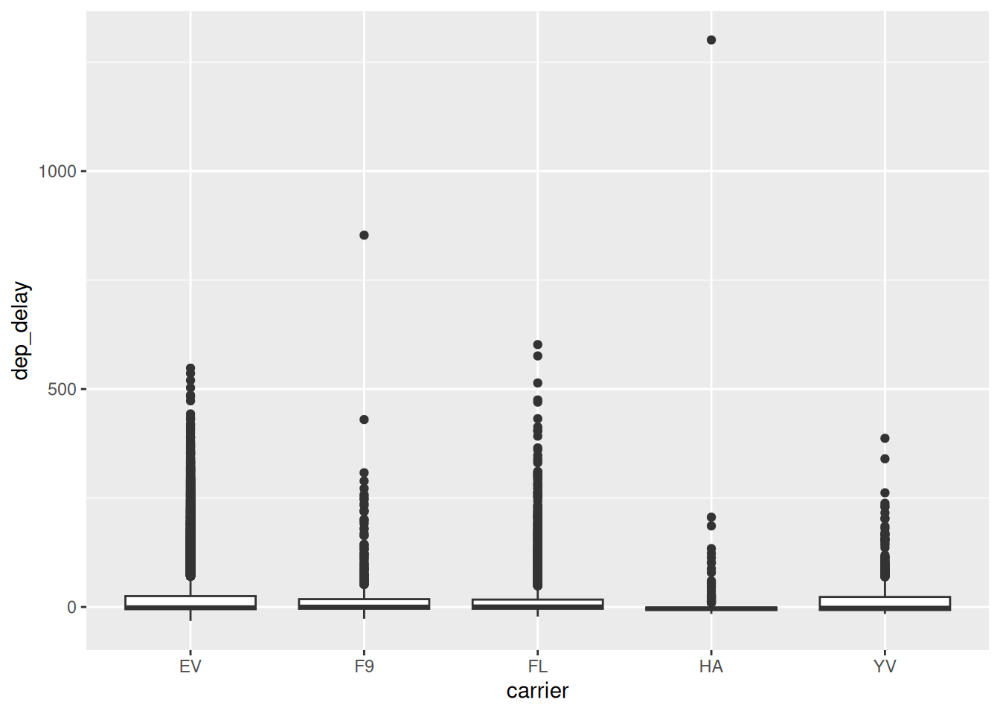
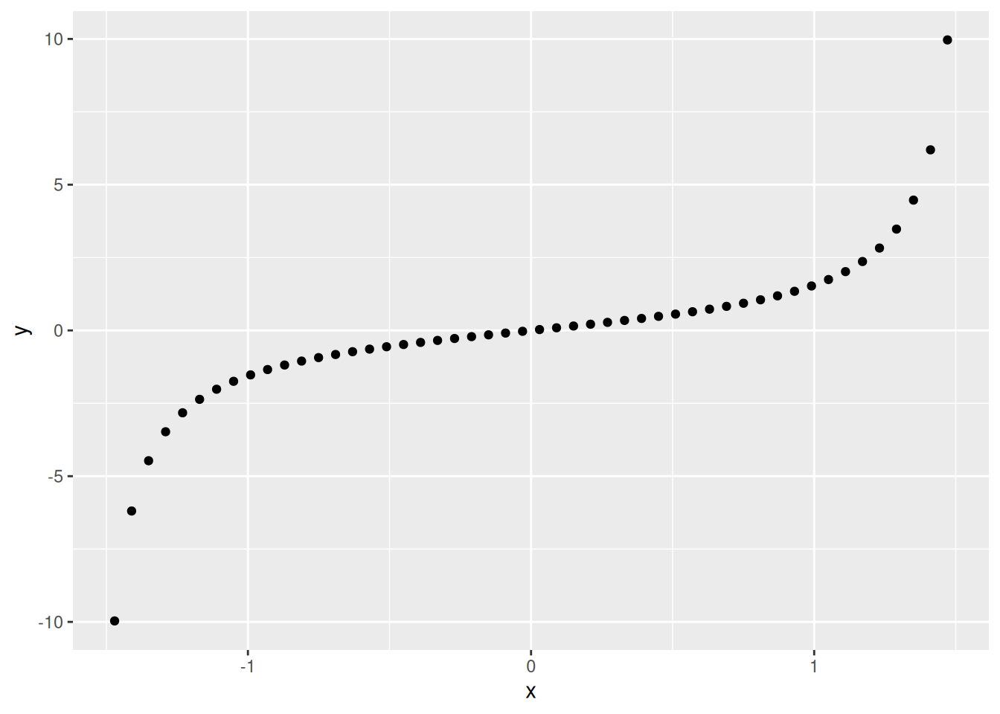
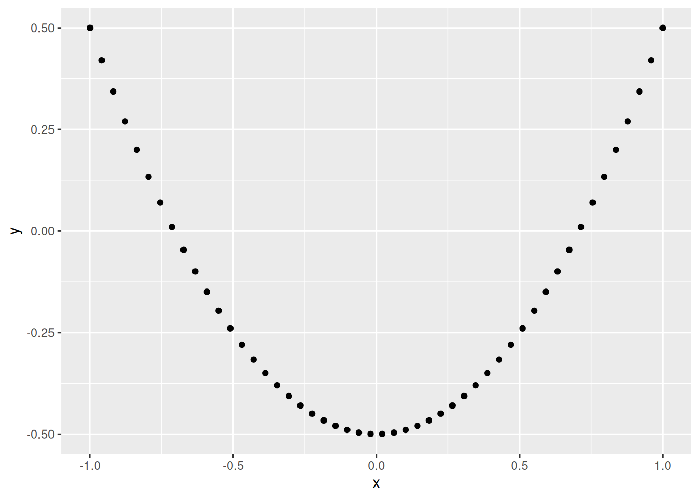
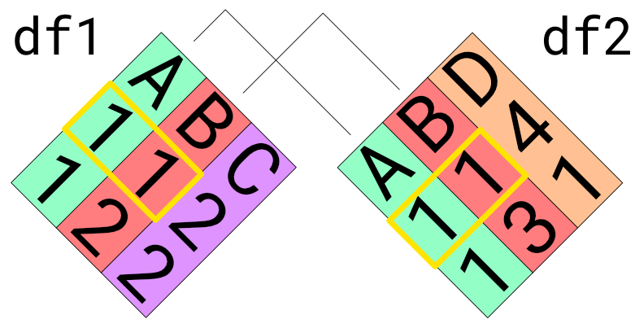

29 Stats: Descriptive Statistics
Purpose: We will use descriptive statistics to make quantitative summaries of a dataset. Descriptive statistics provide a much more compact description than a visualization, and are important when a data consumer wants “just one number”.
Reading: (None; this exercise is the reading.)
Topics: Mean, standard deviation, median, quantiles, dependence, correlation, robustness
## ── Attaching core tidyverse packages ──────────────────────── tidyverse 2.0.0 ──
## ✔ dplyr 1.1.4 ✔ readr 2.1.5
## ✔ forcats 1.0.0 ✔ stringr 1.5.1
## ✔ ggplot2 3.5.1 ✔ tibble 3.2.1
## ✔ lubridate 1.9.4 ✔ tidyr 1.3.1
## ✔ purrr 1.0.4
## ── Conflicts ────────────────────────────────────────── tidyverse_conflicts() ──
## ✖ dplyr::filter() masks stats::filter()
## ✖ dplyr::lag() masks stats::lag()
## ℹ Use the conflicted package (<http://conflicted.r-lib.org/>) to force all conflicts to become errorslibrary(nycflights13)
library(gapminder)
library(mvtnorm)
## NOTE: No need to change this!
vis_central <- function(df, var) {
df %>%
ggplot(aes({{var}})) +
geom_density() +
geom_vline(
data = . %>% summarize(mu = mean({{var}}, na.rm = TRUE)),
mapping = aes(xintercept = mu, color = "Mean")
) +
geom_vline(
data = . %>% summarize(mu = median({{var}}, na.rm = TRUE)),
mapping = aes(xintercept = mu, color = "Median")
) +
scale_color_discrete(name = "Location")
}29.1 Statistics
A statistic is a numerical summary of a sample. Statistics are useful because they provide a useful summary about our data. A histogram gives us a rich summary of a datset: for example the departure delay time in the NYC flight data.
## NOTE: No need to change this!
flights %>%
ggplot(aes(dep_delay)) +
geom_histogram(bins = 60) +
scale_x_log10()## Warning in transformation$transform(x): NaNs produced## Warning in scale_x_log10(): log-10 transformation introduced infinite values.## Warning: Removed 208344 rows containing non-finite outside the scale range
## (`stat_bin()`).
However, we might be interested in a few questions about these data:
- What is a typical value for the departure delay? (Location)
- How variable are departure delay times? (Spread)
- How much does departure delay co-vary with distance? (Dependence)
We can give quantitative answers to all these questions using statistics!
29.2 Handling NA’s
Before we can start computing (descriptive) statistics, we need to learn how to deal with data issues. For instance, in the NYC flights data, we have a number of NAs.
## NOTE: No need to change this!
flights %>%
summarize(across(where(is.numeric), ~sum(is.na(.)))) %>%
glimpse## Rows: 1
## Columns: 14
## $ year <int> 0
## $ month <int> 0
## $ day <int> 0
## $ dep_time <int> 8255
## $ sched_dep_time <int> 0
## $ dep_delay <int> 8255
## $ arr_time <int> 8713
## $ sched_arr_time <int> 0
## $ arr_delay <int> 9430
## $ flight <int> 0
## $ air_time <int> 9430
## $ distance <int> 0
## $ hour <int> 0
## $ minute <int> 0These NAs will “infect” our computation, and lead to NA summaries.
## Rows: 1
## Columns: 14
## $ year <dbl> 2013
## $ month <dbl> 6.54851
## $ day <dbl> 15.71079
## $ dep_time <dbl> NA
## $ sched_dep_time <dbl> 1344.255
## $ dep_delay <dbl> NA
## $ arr_time <dbl> NA
## $ sched_arr_time <dbl> 1536.38
## $ arr_delay <dbl> NA
## $ flight <dbl> 1971.924
## $ air_time <dbl> NA
## $ distance <dbl> 1039.913
## $ hour <dbl> 13.18025
## $ minute <dbl> 26.2301Let’s learn how to handle this:
29.2.1 q1 The following code returns NA. Look up the documentation for mean and use an additional argument to strip the NA values in the dataset before computing the mean. Make this modification to the code below and report the mean departure delay time.
## TASK: Edit to drop all NAs before computing the mean
flights %>%
summarize(dep_delay = mean(dep_delay, na.rm = TRUE))## # A tibble: 1 × 1
## dep_delay
## <dbl>
## 1 12.6Observations:
- The mean departure delay is about
12.6minutes
29.3 Central Tendency
Central tendency is the idea of where data tend to be “located”—this concept is also called location. It is best thought of as the “center” of the data. The following graph illustrates central tendency.

There are two primary measures of central tendency; the mean and median. The mean is the simple arithmetic average: the sum of all values divided by the total number of values. The mean is denoted by \(\overline{x}\) and defined by
\[\overline{X} = \frac{1}{n} \sum_{i=1}^n X_i,\]
where \(n\) is the number of data points, and the \(X_i\) are the individual values.
The median is the value that separates half the data above and below. Weirdly, there’s no standard symbol for the median, so we’ll just denote it as \(\text{Median}[D]\) to denote the median of a set of data \(D\).
The median is a robust statistic, which is best illustrated by example. Consider the following two samples v_base and v_outlier. The sample v_outlier has an outlier, a value very different from the other values. Observe what value the mean and median take for these different samples.
## NOTE: No need to change this!
v_base <- c(1, 2, 3, 4, 5)
v_outlier <- c(v_base, 1e3)
tibble(
mean_base = mean(v_base),
median_base = median(v_base),
mean_outlier = mean(v_outlier),
median_outlier = median(v_outlier)
) %>% glimpse## Rows: 1
## Columns: 4
## $ mean_base <dbl> 3
## $ median_base <dbl> 3
## $ mean_outlier <dbl> 169.1667
## $ median_outlier <dbl> 3.5Note that for v_outlier the mean is greatly increased, but the median is only slightly changed. It is in this sense that the median is robust—it is robust to outliers. When one has a dataset with outliers, the median is usually a better measure of central tendency.[1]
It can be useful to think about when the mean and median agree or disagree with each other. For instance, with the flights data:
## Warning: Removed 8255 rows containing non-finite outside the scale range
## (`stat_density()`).
the mean and median dep_delay largely agree (relative to all the other data). But for the gapminder data:

the mean and median gdpPercap disagree.[2]
29.3.1 q2 The following code computes the mean and median dep_delay for each carrier, and sorts based on mean. Duplicate the code, and sort by median instead. Report your observations on which carriers are in both lists, and which are different. Also comment on what negative dep_delay values mean.
Hint: Remember you can check the documentation of a built-in dataset with ?flights!
## NOTE: No need to change this!
flights %>%
group_by(carrier) %>%
summarize(
mean = mean(dep_delay, na.rm = TRUE),
median = median(dep_delay, na.rm = TRUE)
) %>%
arrange(desc(mean)) %>%
head(5)## # A tibble: 5 × 3
## carrier mean median
## <chr> <dbl> <dbl>
## 1 F9 20.2 0.5
## 2 EV 20.0 -1
## 3 YV 19.0 -2
## 4 FL 18.7 1
## 5 WN 17.7 1## TASK: Duplicate the code above, but sort by `median` instead
flights %>%
group_by(carrier) %>%
summarize(
mean = mean(dep_delay, na.rm = TRUE),
median = median(dep_delay, na.rm = TRUE)
) %>%
arrange(desc(median)) %>%
head(5)## # A tibble: 5 × 3
## carrier mean median
## <chr> <dbl> <dbl>
## 1 FL 18.7 1
## 2 WN 17.7 1
## 3 F9 20.2 0.5
## 4 UA 12.1 0
## 5 VX 12.9 0Observations:
- The carriers
F9, FL, WNare in both lists - The carriers
EV, YVare top in mean, whileUA, VXare top in median - Negative values of
dep_delaysignal early departures
29.4 Multi-modality
It may not seem like it, but we’re actually making an assumption when we use the mean (or median) as a typical value. Imagine we had the following data:
bind_rows(
tibble(X = rnorm(300, mean = -2)),
tibble(X = rnorm(300, mean = +2))
) %>%
ggplot(aes(X)) +
geom_histogram(bins = 60) +
geom_vline(aes(xintercept = mean(X), color = "Mean")) +
geom_vline(aes(xintercept = median(X), color = "Median")) +
scale_color_discrete(name = "Statistic")Here the mean and median are both close to zero, but zero is an atypical number! This is partly why we don’t only compute descriptive statistics, but also do a deeper dive into our data. Here, we should probably refuse to give a single typical value; instead, it seems there might really be two populations showing up in the same dataset, so we can give two typical numbers, say -2, +2.
29.5 Quantiles
Before we can talk about spread, we need to talk about quantiles. A quantile is a value that separates a user-specified fraction of data (or a distribution). For instance, the median is the \(50%\) quantile; thus \(\text{Median}[D] = Q_{0.5}[D]\). We can generalize this idea to talk about any quantile between \(0%\) and \(100%\).
The following graph visualizes the \(25%, 50%, 75%\) quantiles of a standard normal. Since these are the quarter-quantiles (\(1/4, 2/4, 3/4\)), these are often called the quartiles.
## NOTE: No need to change this!
tibble(z = seq(-3, +3, length.out = 500)) %>%
mutate(d = dnorm(z)) %>%
ggplot(aes(z, d)) +
geom_line() +
geom_segment(
data = tibble(p = c(0.25, 0.50, 0.75)) %>%
mutate(
z = qnorm(p),
d = dnorm(z)
),
mapping = aes(xend = z, yend = 0, color = as_factor(p))
) +
scale_color_discrete(name = "Quantile")
Note: The function qnorm returns the quantiles of a normal distribution. We’ll focus on quantiles of samples in this exercise.
We’ll use the quartiles to define the interquartile range. First, the quantile() function computes quantiles of a sample. For example:
## NOTE: No need to change this! Run for an example
flights %>%
pull(dep_delay) %>%
quantile(., probs = c(0, 0.25, 0.50, 0.75, 1.00), na.rm = TRUE)## 0% 25% 50% 75% 100%
## -43 -5 -2 11 1301Like with mean, median, we need to specify if we want to remove NAs. We can provide a list of probs to specify the probabilities of the quantiles. Remember: a probability is a value between \([0, 1]\), while a quantile is a value that probably has units, like minutes in the case of dep_delay.
Now we can define the interquartile range:
\[IQR[D] = Q_{0.75}[D] - Q_{0.25}[D]\],
where \(Q_{p}[D]\) is the \(p\)-th quantile of a sample \(D\).
29.5.1 q3 Using the function quantile, compute the interquartile range; this is the difference between the \(75%\) and \(25%\) quantiles.
## NOTE: No need to change this!
set.seed(101)
v_test_iqr <- rnorm(n = 10)
test_iqr <- quantile(v_test_iqr, probs = 0.75) - quantile(v_test_iqr, probs = 0.25)Use the following test to check your answer.
## [1] TRUE## [1] "Great job!"29.6 Spread
Spread is the concept of how tightly or widely data are spread out. There are two primary measures of spread: the standard deviation, and the interquartile range.
The standard deviation (SD) is denoted by \(s\) and defined by
\[s = \sqrt{ \frac{1}{n-1} \sum_{i=1}^n (X_i - \overline{X})^2 },\]
where \(\overline{X}\) is the mean of the data. Note the factor of \(n-1\) rather than \(n\): This slippery idea is called Bessel’s correction. Note that \(\sigma^2\) is called the variance.
By way of analogy, mean is to standard deviation as median is to IQR: The IQR is a robust measure of spread. Returning to our outlier example:
## NOTE: No need to change this!
v_base <- c(1, 2, 3, 4, 5)
v_outlier <- c(v_base, 1e3)
tibble(
sd_base = sd(v_base),
IQR_base = IQR(v_base),
sd_outlier = sd(v_outlier),
IQR_outlier = IQR(v_outlier)
) %>% glimpse## Rows: 1
## Columns: 4
## $ sd_base <dbl> 1.581139
## $ IQR_base <dbl> 2
## $ sd_outlier <dbl> 407.026
## $ IQR_outlier <dbl> 2.529.6.1 q4 Using the code from q2 as a starting point, compute the standard deviation (sd()) and interquartile range (IQR()), and rank the top five carriers, this time by sd and IQR. Report your observations on which carriers are in both lists, and which are different. Also note and comment on which carrier (among your top-ranked) has the largest difference between sd and IQR.
## TODO: Use code from q2 to compute the sd and IQR, rank as before
flights %>%
group_by(carrier) %>%
summarize(
sd = sd(dep_delay, na.rm = TRUE),
IQR = IQR(dep_delay, na.rm = TRUE)
) %>%
arrange(desc(sd)) %>%
head(5)## # A tibble: 5 × 3
## carrier sd IQR
## <chr> <dbl> <dbl>
## 1 HA 74.1 6
## 2 F9 58.4 22
## 3 FL 52.7 21
## 4 YV 49.2 30
## 5 EV 46.6 30flights %>%
group_by(carrier) %>%
summarize(
sd = sd(dep_delay, na.rm = TRUE),
IQR = IQR(dep_delay, na.rm = TRUE)
) %>%
arrange(desc(IQR)) %>%
head(5)## # A tibble: 5 × 3
## carrier sd IQR
## <chr> <dbl> <dbl>
## 1 EV 46.6 30
## 2 YV 49.2 30
## 3 9E 45.9 23
## 4 F9 58.4 22
## 5 FL 52.7 21Observations:
- The carriers
F9, FL, YV, EVare in both lists - The carrier
HAis top insd, while9Eis top in IQR HAhas a large difference betweensdandIQR; based on the following vis, it appears thatHAhas a lot more outliers than other carriers, which bumps up itssd
flights %>%
filter(carrier %in% c("HA", "F9", "FL", "YV", "EV")) %>%
ggplot(aes(carrier, dep_delay)) +
geom_boxplot()## Warning: Removed 2949 rows containing non-finite outside the scale range
## (`stat_boxplot()`).
29.7 Dependence
So far, we’ve talked about descriptive statistics to consider one variable at a time. To conclude, we’ll talk about statistics to consider dependence between two variables in a dataset.
Dependence—like location or spread—is a general idea of relation between two variables. For instance, when it comes to flights we’d expect trips between more distant airports to take longer. If we plot distance vs air_time in a scatterplot, we indeed see this dependence.
## Warning: Removed 9430 rows containing missing values or values outside the scale range
## (`geom_point()`).
Two flavors of correlation help us make this idea quantitative: the Pearson correlation and Spearman correlation. Unlike our previous quantities for location and spread, these correlations are dimensionless (they have no units), and they are bounded between \([-1, +1]\).
The Pearson correlation is often denoted by \(r_{XY}\), and it specifies the variables being considered \(X, Y\). It is defined by
\[r_{XY} = \frac{\sum_{i=1}^n (X_i - \overline{X}) (Y_i - \overline{Y})}{s_X s_Y}.\]
The Spearman correlation is often denoted by \(\rho_{XY}\), and is actually defined in terms of the Pearson correlation \(r_{XY}\), but with the ranks (\(1\) to \(n\)) rather than the values \(X_i, Y_i\).
For example, we might expect a strong correlation between the air_time and the distance between airports. The function cor computes the Pearson correlation.
## NOTE: No need to change this!
flights %>%
summarize(rho = cor(air_time, distance, use = "na.or.complete"))## # A tibble: 1 × 1
## rho
## <dbl>
## 1 0.991Note: Unfortunately, the function cor doesn’t follow the same pattern as mean or sd. We have to use this use argument to filter NAs.
However, we wouldn’t expect any relation between air_time and month.
## NOTE: No need to change this!
flights %>%
summarize(rho = cor(air_time, month, use = "na.or.complete"))## # A tibble: 1 × 1
## rho
## <dbl>
## 1 0.0109In the case of a perfect linear relationships the Pearson correlation takes the value \(+1\) (for a positive slope) or \(-1\) for a negative slope.
29.7.1 q5 Compute the Pearson correlation between x, y below. Play with the slope and observe the change in the correlation.
slope <- 0.5 # Play with this value; observe the correlation
df_line <-
tibble(x = seq(-1, +1, length.out = 50)) %>%
mutate(y = slope * x)
df_line %>%
ggplot(aes(x, y)) +
geom_point()
Observations:
slopevalues greater than 0 have a positive correlationslopevalues less than 0 have a negative correlation
Note that this means correlation is a measure of dependence; it is not a measure of slope! It is better thought of as how strong the relationship between two variables is. A closer-to-zero correlation indicates a noisy relationship between variables, while a closer-to-one (in absolute value) indicates a more perfect, predictable relationship between the variables. For instance, the following code simulates data with different correlations, and facets the data based on the underlying correlation.
## NOTE: No need to change this!
map_dfr(
c(-1.0, -0.5, +0.0, +0.5, +1.0), # Chosen correlations
function(r) {
# Simulate a multivariate gaussian
X <- rmvnorm(
n = 100,
sigma = matrix(c(1, r, r, 1), nrow = 2)
)
# Package and return the data
tibble(
x = X[, 1],
y = X[, 2],
r = r
)
}
) %>%
# Plot the data
ggplot(aes(x, y)) +
geom_point() +
facet_wrap(~r)
One of the primary differences between Pearson and Spearman is that Pearson is a linear correlation, while Spearman is a nonlinear correlation. For instance, the following data
## NOTE: No need to change this!
# Positive slope
df_monotone <-
tibble(x = seq(-pi/2 + 0.1, +pi/2 - 0.1, length.out = 50)) %>%
mutate(y = tan(x))
df_monotone %>%
ggplot(aes(x, y)) +
geom_point()
have a perfect relationship between them. The Pearson correlation does not pick up on this fact, while the Spearman correlation indicates a perfect relation.
## # A tibble: 1 × 1
## rho
## <dbl>
## 1 0.846## # A tibble: 1 × 1
## rho
## <dbl>
## 1 1One more note about functional relationships: Neither Pearson nor Spearman can pick up on arbitrary dependencies.
29.7.2 q6 Run the code chunk below and look at the visualization: Make a prediction about what you think the correlation will be. Then compute the Pearson correlation between x, y below.
## NOTE: No need to change this!
df_quad <-
tibble(x = seq(-1, +1, length.out = 50)) %>%
mutate(y = x^2 - 0.5)
## TASK: Compute the Pearson and Spearman correlations on `df_quad`
df_quad %>%
summarize(rho = cor(x, y, method = "pearson"))## # A tibble: 1 × 1
## rho
## <dbl>
## 1 -2.02e-16## # A tibble: 1 × 1
## rho
## <dbl>
## 1 -0.0236
Observations:
- Both correlations are near-zero
One last point about correlation: The mean is to Pearson correlation as the median is to Spearman correlation. The median and Spearman’s rho are robust to outliers.
## NOTE: No need to change this!
set.seed(101)
X <- rmvnorm(
n = 25,
sigma = matrix(c(1, 0.9, 0.9, 1), nrow = 2)
)
df_cor_outliers <-
tibble(
x = X[, 1],
y = X[, 2]
) %>%
bind_rows(tibble(x = c(-10.1, -10, 10, 10.1), y = c(-1.2, -1.1, 1.1, 1.2)))
df_cor_outliers %>%
ggplot(aes(x, y)) +
geom_point()
## # A tibble: 1 × 1
## rho
## <dbl>
## 1 0.621## # A tibble: 1 × 1
## rho
## <dbl>
## 1 0.88429.8 Notes
[1] So then why bother with the mean? It turns out the mean is a fundamental idea in statistics, as it’s a key component of a lot of other statistical procedures. You’ll end up using the mean in countless different ways, so it’s worth recognizing its weakness to outliers.
[2] As a side note, since dollars are pretty-well divorced from reality (there’s not physical upper bound on perceived value), distributions of dollars can have very large outliers. That’s why you often see median incomes reported, rather than mean income.
Purpose: Often our data are scattered across multiple sets. In this case, we need to be able to join data.
Reading: (None, this is the reading) Topics: Welcome, mutating joins, filtering joins, Binds and set operations
## ── Attaching core tidyverse packages ──────────────────────── tidyverse 2.0.0 ──
## ✔ dplyr 1.1.4 ✔ readr 2.1.5
## ✔ forcats 1.0.0 ✔ stringr 1.5.1
## ✔ ggplot2 3.5.1 ✔ tibble 3.2.1
## ✔ lubridate 1.9.4 ✔ tidyr 1.3.1
## ✔ purrr 1.0.4
## ── Conflicts ────────────────────────────────────────── tidyverse_conflicts() ──
## ✖ dplyr::filter() masks stats::filter()
## ✖ dplyr::lag() masks stats::lag()
## ℹ Use the conflicted package (<http://conflicted.r-lib.org/>) to force all conflicts to become errors29.9 Combining data
Frequently, the data we need for an analysis is scattered across multiple datasets. In that case, we need tools to combine data sets. In R there are two classes of data-combiners:
- Binding is a “dumb” way to combine datasets: When binding we have to be very careful to combine the right rows and columns.
- Joining is a smarter way to combine datasets. We provide certain shared variables (join keys) to join the correct rows.
29.9.1 Dangers of Binding!
As noted above, binding is a “dumb” way to combine data.
Let’s look at an example using bind_columns. This will take two datasets and “glue” them together in whatever order the happened to be arranged in.
## NOTE: No need to change this; setup
beatles1 <-
tribble(
~band, ~name,
"Beatles", "John",
"Beatles", "Paul",
"Beatles", "George",
"Beatles", "Ringo"
)
beatles2 <-
tribble(
~surname, ~instrument,
"McCartney", "bass",
"Harrison", "guitar",
"Starr", "drums",
"Lennon", "guitar"
)
bind_cols(beatles1, beatles2)## # A tibble: 4 × 4
## band name surname instrument
## <chr> <chr> <chr> <chr>
## 1 Beatles John McCartney bass
## 2 Beatles Paul Harrison guitar
## 3 Beatles George Starr drums
## 4 Beatles Ringo Lennon guitar29.9.2 q1 Diagnose an issue
Describe what is wrong with the result of bind_cols above and how it happened.
Hint: John Lennon played guitar in The Beatles. John McCartney is not a real person… (as far as I know).
- The rows of
beatles1andbeatles2were not ordered identically; therefore the wrong names and surnames were combined
29.10 Joining data
Rather than do a dumb binding, we can use a set of columns to more intelligently join two datasets. Joins operate by combining only those rows of data that match on a selected set of join keys. For example, the following image illustrates how we would join two datasets on the columns A and B. Note that only those rows that match on both A and B are joined.

Here’s what the example would look like with R datasets:
## NOTE: No need to edit
df1 <- tibble(
A = c(1, 1),
B = c(1, 2),
C = c(2, 2)
)
df2 <- tibble(
A = c(1, 1),
B = c(1, 3),
D = c(4, 1)
)
inner_join(df1, df2, by = c("A", "B"))## # A tibble: 1 × 4
## A B C D
## <dbl> <dbl> <dbl> <dbl>
## 1 1 1 2 4Note how the joined dataset includes columns from both df1 and df2. This is “the point” of joining data—to bring together different sources of data.
Note that we can “chain” multiple joins to combine datasets. Sometimes this is necessary when we have different join keys between different pairs of datasets. As an example, we’ll use the following beatles3 to correctly join the data.
## NOTE: No need to change this; setup
# This is our source of join key information
beatles3 <-
tribble(
~name, ~surname,
"John", "Lennon",
"Paul", "McCartney",
"George", "Harrison",
"Ringo", "Starr"
)29.10.1 q2 Use the following beatles3 to correctly join beatles1
Hint: You will need to use two join functions to complete this task.
df_q2 <-
beatles1 %>%
left_join(
beatles3,
by = "name"
) %>%
left_join(
beatles2,
by = "surname"
)
df_q2## # A tibble: 4 × 4
## band name surname instrument
## <chr> <chr> <chr> <chr>
## 1 Beatles John Lennon guitar
## 2 Beatles Paul McCartney bass
## 3 Beatles George Harrison guitar
## 4 Beatles Ringo Starr drumsUse the following test to check your work:
## NOTE: No need to change this
# Reference dataset
beatles_joined <-
tribble(
~band, ~name, ~surname, ~instrument,
"Beatles", "John", "Lennon", "guitar",
"Beatles", "Paul", "McCartney", "bass",
"Beatles", "George", "Harrison", "guitar",
"Beatles", "Ringo", "Starr", "drums"
)
# Check for correctness
assertthat::assert_that(all_equal(df_q2, beatles_joined))## Warning: `all_equal()` was deprecated in dplyr 1.1.0.
## ℹ Please use `all.equal()` instead.
## ℹ And manually order the rows/cols as needed
## This warning is displayed once every 8 hours.
## Call `lifecycle::last_lifecycle_warnings()` to see where this warning was
## generated.## [1] TRUE## [1] "Nice!"There’s a very important lesson here: In general, don’t trust bind_cols. It’s easy in the example above to tell there’s a problem because the data are small; when working with larger datasets, R will happily give you the wrong answer if you give it the wrong instructions. Whenever possible, use some form of join to combine datasets.
29.11 Different types of joins
There are two primary classes of joints: mutating joins and filter joins.
29.11.1 Mutating joins
Mutating joins modify (or “mutate”) the data. There are four primary mutating joins to consider:
left_join(df_A, df_B): This preserves all rows indf_A, and only those indf_Bthat have a match

right_join(df_A, df_B): This preserves all rows indf_B, and only those indf_Athat have a matchinner_join(df_A, df_B): This preserves only those rows that have a match betweendf_Aanddf_B
full_join(df_A, df_B): This preserves all rows indf_Aand all rows indf_B, regardless of matches.
Note: Much of the join terminology is based on SQL, which is a database access language.
Here are a few tips to help with selecting the appropriate join:
- To preserve as many rows as possible, use a
full_join() - To ensure only valid matches, use an
inner_join() - To add information to a dataset
df_main, useleft_join(df_main, df_extra)
29.11.2 Keys with different names
So far in our examples, join keys have had the same column name. However, there is no guarantee that our join keys will have the same names across all datasets. Thankfully, the *_join() functions have a way to deal with non-matching names. We can use a named vector to specify the key names on both sides.
For instance, the nycflights13 database has multiple tables, including one for the airpots:
## # A tibble: 1,458 × 8
## faa name lat lon alt tz dst tzone
## <chr> <chr> <dbl> <dbl> <dbl> <dbl> <chr> <chr>
## 1 04G Lansdowne Airport 41.1 -80.6 1044 -5 A America/…
## 2 06A Moton Field Municipal Airport 32.5 -85.7 264 -6 A America/…
## 3 06C Schaumburg Regional 42.0 -88.1 801 -6 A America/…
## 4 06N Randall Airport 41.4 -74.4 523 -5 A America/…
## 5 09J Jekyll Island Airport 31.1 -81.4 11 -5 A America/…
## 6 0A9 Elizabethton Municipal Airport 36.4 -82.2 1593 -5 A America/…
## 7 0G6 Williams County Airport 41.5 -84.5 730 -5 A America/…
## 8 0G7 Finger Lakes Regional Airport 42.9 -76.8 492 -5 A America/…
## 9 0P2 Shoestring Aviation Airfield 39.8 -76.6 1000 -5 U America/…
## 10 0S9 Jefferson County Intl 48.1 -123. 108 -8 A America/…
## # ℹ 1,448 more rowsNote that the airport identifier in airports is faa. However, for flights, we have to specify an airport identifier for both the origin and dest. We can use a named vector to match up the join key:
## NOTE: No need to edit
flights %>%
select(flight, origin) %>%
left_join(
airports %>% select(faa, name),
# name in `flights` name in `airports`
by = c( "origin" = "faa" )
)## # A tibble: 336,776 × 3
## flight origin name
## <int> <chr> <chr>
## 1 1545 EWR Newark Liberty Intl
## 2 1714 LGA La Guardia
## 3 1141 JFK John F Kennedy Intl
## 4 725 JFK John F Kennedy Intl
## 5 461 LGA La Guardia
## 6 1696 EWR Newark Liberty Intl
## 7 507 EWR Newark Liberty Intl
## 8 5708 LGA La Guardia
## 9 79 JFK John F Kennedy Intl
## 10 301 LGA La Guardia
## # ℹ 336,766 more rows29.11.3 q3 Add the airport name
Complete the code below by using an appropriate join to add the airport name to the flights dataset.
Aside: While you’re at it, try replacing left_join() with inner_join(). What happens to the resulting data?
## TASK: Add the airport name for the `dest` using a join
flights %>%
left_join(
airports %>% select(faa, name),
by = c("dest" = "faa")
) %>%
select(flight, dest, name, everything())## # A tibble: 336,776 × 20
## flight dest name year month day dep_time sched_dep_time dep_delay
## <int> <chr> <chr> <int> <int> <int> <int> <int> <dbl>
## 1 1545 IAH George Bush… 2013 1 1 517 515 2
## 2 1714 IAH George Bush… 2013 1 1 533 529 4
## 3 1141 MIA Miami Intl 2013 1 1 542 540 2
## 4 725 BQN <NA> 2013 1 1 544 545 -1
## 5 461 ATL Hartsfield … 2013 1 1 554 600 -6
## 6 1696 ORD Chicago Oha… 2013 1 1 554 558 -4
## 7 507 FLL Fort Lauder… 2013 1 1 555 600 -5
## 8 5708 IAD Washington … 2013 1 1 557 600 -3
## 9 79 MCO Orlando Intl 2013 1 1 557 600 -3
## 10 301 ORD Chicago Oha… 2013 1 1 558 600 -2
## # ℹ 336,766 more rows
## # ℹ 11 more variables: arr_time <int>, sched_arr_time <int>, arr_delay <dbl>,
## # carrier <chr>, tailnum <chr>, origin <chr>, air_time <dbl>, distance <dbl>,
## # hour <dbl>, minute <dbl>, time_hour <dttm>29.11.4 Filtering joins
Unlike a mutating join, a filtering join only filters rows—it doesn’t modify values or add any new columns. There are two filter joins:
semi_join(df_main, df_criteria): Returns those rows indf_mainthat have a match indf_criteriaanti_join(df_main, df_criteria): Returns those rows indf_mainthat do not have a match indf_criteria
Filtering joins are an elegant way to produce complicated filters. They are especially helpful because you can first inspect what criteria you’ll filter on, then perform the filter. We’ll use the tidyr tool expand_grid to make such a criteria dataframe, then apply it to filter the flights data.
29.11.5 q4 Create a “grid” of values
Use expand_grid to create a criteria dataframe with the month equal to 8, 9 and the airport identifiers in dest for the San Francisco, San Jose, and Oakland airports. We’ll use this in q4 for a filter join.
Hint 1: To find the airport identifiers, you can either use str_detect to filter the airports dataset, or use Google!
Hint 2: Remember to look up the documentation for a function you don’t yet know!
## # A tibble: 6 × 2
## month dest
## <dbl> <chr>
## 1 8 SJC
## 2 8 SFO
## 3 8 OAK
## 4 9 SJC
## 5 9 SFO
## 6 9 OAKUse the following test to check your work:
## NOTE: No need to change this
assertthat::assert_that(
all_equal(
criteria,
criteria %>%
semi_join(
airports %>%
filter(
str_detect(name, "San Jose") |
str_detect(name, "San Francisco") |
str_detect(name, "Metropolitan Oakland")
),
by = c("dest" = "faa")
)
)
)## [1] TRUE## [1] TRUE## [1] "Well done!"29.11.6 q5 Filter with your criteria
Use the criteria dataframe you produced above to filter flights on dest and month.
Hint: Remember to use a filtering join to take advantage of the criteria dataset we built above!
## # A tibble: 2,584 × 19
## year month day dep_time sched_dep_time dep_delay arr_time sched_arr_time
## <int> <int> <int> <int> <int> <dbl> <int> <int>
## 1 2013 8 1 554 559 -5 909 902
## 2 2013 8 1 601 601 0 916 915
## 3 2013 8 1 657 700 -3 1016 1016
## 4 2013 8 1 723 730 -7 1040 1045
## 5 2013 8 1 738 740 -2 1111 1055
## 6 2013 8 1 745 743 2 1117 1103
## 7 2013 8 1 810 755 15 1120 1115
## 8 2013 8 1 825 829 -4 1156 1143
## 9 2013 8 1 838 840 -2 1230 1143
## 10 2013 8 1 851 853 -2 1227 1212
## # ℹ 2,574 more rows
## # ℹ 11 more variables: arr_delay <dbl>, carrier <chr>, flight <int>,
## # tailnum <chr>, origin <chr>, dest <chr>, air_time <dbl>, distance <dbl>,
## # hour <dbl>, minute <dbl>, time_hour <dttm>Use the following test to check your work:
## NOTE: No need to change this
assertthat::assert_that(
all_equal(
df_q5,
df_q5 %>%
filter(
month %in% c(8, 9),
dest %in% c("SJC", "SFO", "OAK")
)
)
)## [1] TRUE## [1] "Nice!"